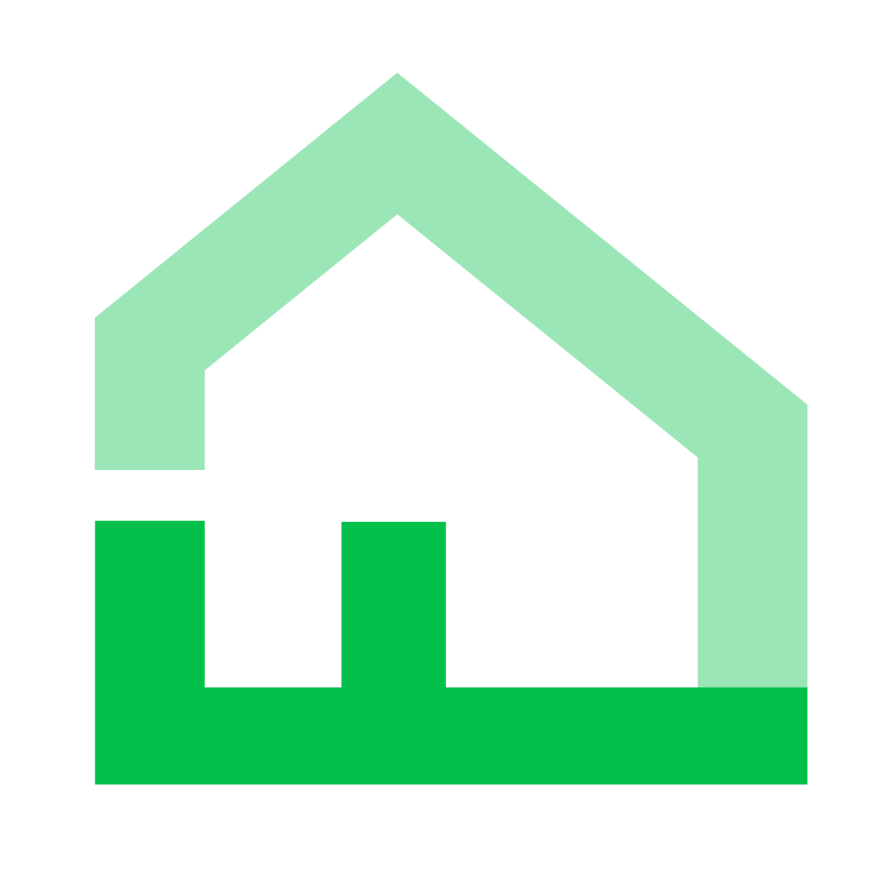

Nicolas S. Montanaro
About
When I was a freshman in college studying finance I found I much preferred spending my time trying to understand
Super Nintendo assembly programming rather than stock numbers.
After a year and a half of formal instruction in computer science I began working at Intel in California. While
there I attended Viking Code School to further develop my programming abilities, and completed a couple of side
projects.
During the summer of 2016 I worked remotely on mySpiderweb with a team of
two other developers and the founder. The small team led to a fantastic work experience and I'm proud to
have had my hands in all aspects of the application.
I attended the Recurse Center from February to May of 2018 where I created a Game Boy emulator in Go.
I currently work at Foyer as a programmer and technical director for a suite of
cross-platform applications.
Contact information
Experience

Foyer, Information & Technology Director
Trumbull, CT
Full-time
May 2017 - present
- Responsible for overall direction and technical decisions regarding the development of the Foyer: Home
Discovery mobile application.
- Created datasource agnostic backend APIs using Node which allowed for a single point of ingestion for
nationwide home information. This makes it simple for any maintainer with knowledge of JavaScript to
seamlessly add new data to the existing pipeline.
- Researched, implemented and maintained a collaborative filtering recommender system with Hadoop and Spark.
Aggregate information about user preferences is used to provide suggestions for homes with qualities a user
is likely to be interested in.
New York City, NY
Full-time
February 2018 - May 2018
From the website:
The Recurse Center runs educational programming retreats in New York City. The retreats are free,
self-directed, project based, and for anyone who wants to get dramatically better at programming.
- Created a Game Boy emulator in Go and gave a presentation on the implementation details.
mySpiderweb, Full Stack Developer
Rochester, NY (remote)
Part-time, summer
May 2016 - September 2016
- mySpiderweb is a social media publishing tool that streamlines a multi-network presence for small
businesses.
- Was a member of a small team developing the application for use with Facebook, LinkedIn, and Twitter
integration. The stack included Meteor, HTML, CSS3, JavaScript, and MongoDB.
Intel, Software Application Engineer
Santa Clara, CA
Co-op, degree requirement
January 2015 - December 2015
- Analyzed the performance of 3D camera hardware & software on Intel architecture prior to release.
- Developed and tested mobile performance analysis tools for Android, iOS, and Windows-based tablets for Intel
lab personnel.
- Identified and resolved proprietary software issues which resulted in the on-time delivery of a performance
monitoring tool to Intel labs.
San Francisco, CA (remote)
Part-time
February 2015 - August 2015
- Completed an intensive 16 week full-stack development boot camp.
- Focused on Ruby + Rails, included JS, Angular, Sinatra, HTML5/CSS3, Sass, and numerous other DSLs,
frameworks, and tools.
RIT, Computer Science Student Lab Instructor
Rochester Institute of Technology
Part-time
August 2014 - January 2015
- Assisted faculty in the delivery and grading of weekly, programming-based laboratories for an introductory
Computer Science course.
- Tutored individual students in introductory Computer Science courses on a biweekly basis.
RIT, Computer Science Ambassador
Rochester Institute of Technology
Part-time
March 2014 - January 2015
- Served as a representative of the computer science program to potential new students by running
informational seminars and tours.
- Interviewed potential professors with RIT faculty when potential professors sought employment.
Rochester Institute of Technology
Extracurricular
February 2014 - January 2015
- Managed the day-to-day operations and long-term goals of over 17 varied committees within a chapter of 60
members.
- Maintained, created, and edited all internal governing documents related to the fraternity.
Projects
Technologies uses: Go
- Halken is a Game Boy emulator written in Go.
- Created as an exercise in low-level programming and to gain a better understanding of computer
architecture while at the Recurse Center.
Independent study in code clone detection techniques
Technologies uses: Java
View the white paper here.
- Implemented a naive version of GPLAG.
- Compared GPLAG against widely-used tools for plagiarism detection in student code submissions.
- Benchmarked and analyzed tokenization vs. subgraph isomorphism detection techniques for code clone
detection.
Technologies used: Ruby, Faraday
- Kohaku is an automated image tagging program written in Ruby using the Imagga API.
- Primarily targeted towards individuals who store a lot of pictures locally, such as imageboard users.
Technologies used: Ruby, Rails, Bootstrap, HTML5, CSS3, SASS, Angular.js
- Web application that allows users to scrape recipes from popular recipe websites and store them in a
personal recipe book.
- Users may take notes on recipes, generate printable PDFs of recipes, follow other users, share recipes
with other users, and view user activity in a feed.
Technologies used: LÖVE framework, Lua, Photoshop
- Game created entirely from scratch in under 48 hours for the Ludum Dare 33 game jam.
- Made with no prior knowledge of Lua or the LÖVE framework.
From a user review:
Alice & August, by nic, is something like Dear Esther in its design. We are given a series of
rooms to wander between, with each one bringing us a little closer to understanding our relationship
to the absent other. Another very interesting choice is the lack of animation: the avatar is a still
sprite, sliding through a maze. At times, however, we have to cross a long, featureless hallway and
without animation to give us a sense of the passage of time we become anxious. Our anxiety — as to
whether time is passing in a meaningful way at all, or whether the game has crashed — mirrors the
protagonist’s anxiety after their own life spiraled out of control.